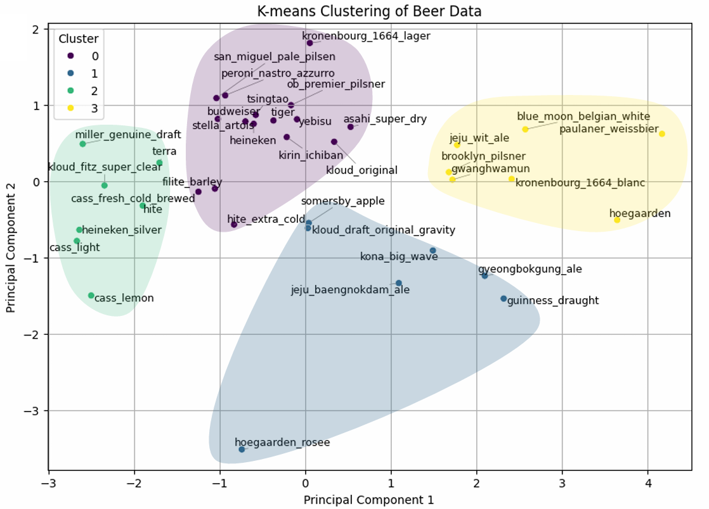

Machuilin
Machuilin is a machine learning-based beer recommendation system that helps users discover and learn about various beers. The system analyzes user-uploaded photos to detect beer labels, using Microsoft Azure’s Custom Vision to identify the beer and provide relevant details. Additionally, Machuilin uses clustering algorithms to group similar beers, enabling users to explore different types with shared characteristics.
'machuilin' is a title that is similar in pronunciation to the Korean word for 'drink'. The title is meant to evoke the idea of drinking and Michelin.
I led the development of the recommendation algorithm, including data analysis, clustering implementation, and design app ui, collaborating closely with other team members:
Casual drinkers looking for new recommendations
Mobile App, Web App
1.5 weeks
Searching for beers with long or unfamiliar names is inconvenient, especially for users who are not beer enthusiasts.
💡 Solution: To enhance the convenience of beer searches, we developed an image-based search system using Azure Custom Vision. Users can take a photo to identify beers instantly. To improve accuracy, the training data includes images taken from various angles, lighting conditions, and perspectives.
Basic clustering methods can group dissimilar beers, like pilsners and strongly peach-flavored beers, into the same cluster, resulting in poor recommendations.
💡 Solution: To enhance the accuracy of clustering, we analyzed beer review data to identify the key attributes most valued by users. By assigning higher weights to these attributes during the clustering process, we ensured that beers were grouped more appropriately, resulting in improved recommendations.
Ensuring the reliability of data and selecting reasonable columns for analysis were significant challenges.
💡 Solution: To improve data reliability, we aggregated information from two globally renowned beer community platforms. We utilized review data from users whose nationality was disclosed and who had written at least 10 reviews. This approach ensured high-quality and trustworthy data for the system.
We gathered data from two major beer community websites, including details such as beer style, brewery, country, ABV (Alcohol By Volume), and user reviews. The collected data was cleaned and structured for analysis by converting ABV values to numerical format, removing missing values, and parsing reviews into distinct features like aroma, appearance, flavor, mouthfeel, overall rating, and user rating.
To prepare the data for machine learning, categorical features such as beer style and country were encoded, and numerical features were standardized. This helped improve the accuracy of clustering and recommendations.
Improve the performance of recommendation models by weighting key flavor attributes (e.g., sweet, bitter) with user preference analysis based on frequency of mention in review data.
Using Azure Custom Vision, I developed a system to train beer images, enabling users to easily recognize and search for beers, even if they are unfamiliar with their long or complex names. This approach simplifies the process of identifying beers and accessing relevant information, making it more user-friendly for a broader audience. (solves for problem 1)
To provide accurate beer recommendations, we utilized K-means clustering. The data was preprocessed by selecting important features, such as bitterness, sweetness, and ABV (Alcohol By Volume). PCA (Principal Component Analysis) was applied to reduce dimensions, ensuring faster and more efficient clustering. Weighting was added to attributes identified as significant from user reviews to improve cluster accuracy.
Using the clustering results, a web application was developed to recommend beers. When a user selects a beer, the app calculates the distances between the selected beer and others within the same cluster. The three closest beers are then recommended based on their similarity in flavor profile and characteristics.
Our system recommends the three most similar beers within the same cluster for any given input. Additionally, the recommendations include not only the beer types but also detailed information such as the country of origin and taste-related attributes.